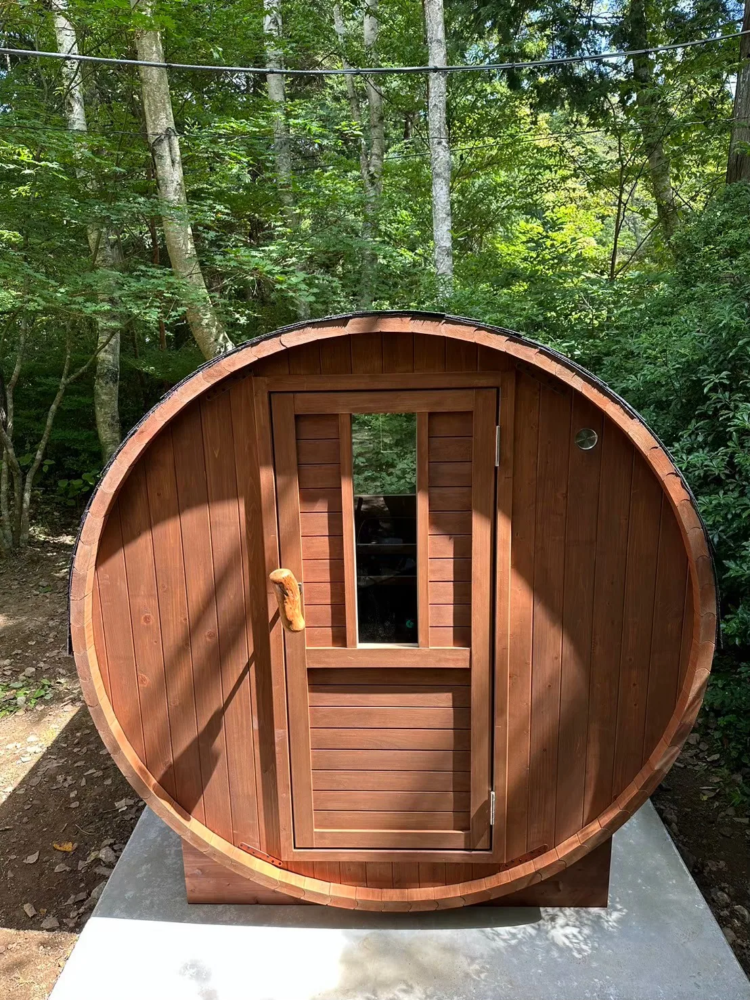
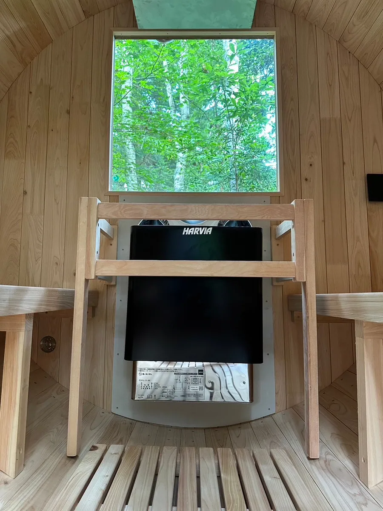
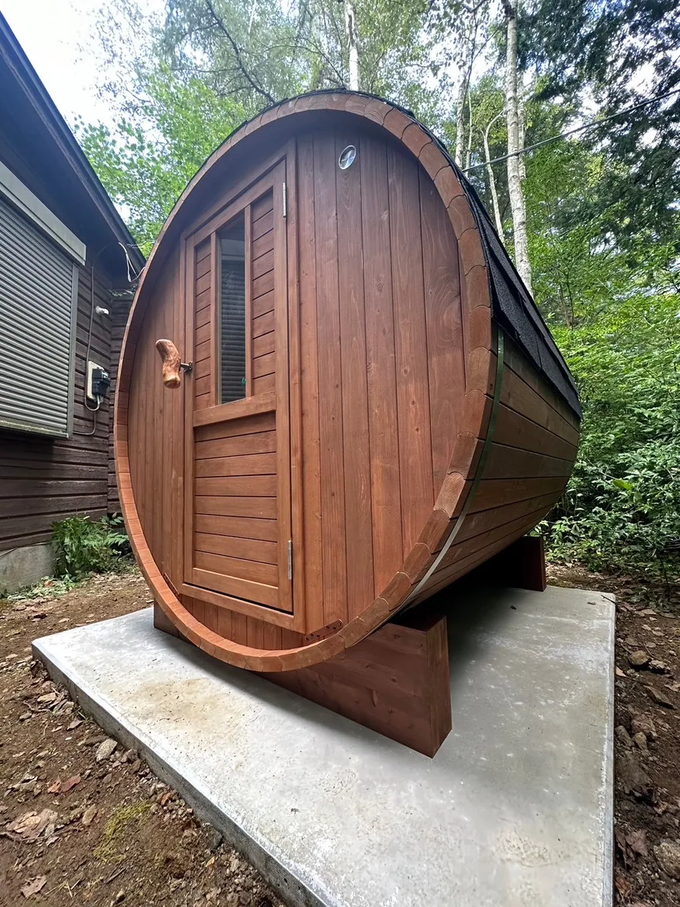

山梨県鳴沢村に位置するとある企業様の保養所に、純国産ヒノキ製のRink SAUNAが導入されました。四季折々の自然に囲まれた静寂な環境で、都会の喧騒を離れ、心身をリフレッシュできる場となっています。
社員全員が利用することを想定し、担当者様は導入にあたり複数のメーカーのショールームを訪れ、比較検討を重ねました。その結果、当社のバレルサウナ、満足度が最も高いと判断され、設置に至りました。

従業員の健康増進と福利厚生の一環としてのバレルサウナ
健康経営を重視するこちらの企業様は、富士山や富士五湖へのアクセスが良く、観光やアクティビティを楽しめる環境が整った保養所を所有しています。
担当者は、サウナを通じて従業員の健康維持や働きやすい職場環境の整備に貢献できると期待を寄せています。
バレルサウナの導入は、社員のモチベーション向上や心身の健康維持に役立つだけでなく、企業の魅力を高め、優秀な人材の確保にもつながります。
導入後は、夏から年末にかけてほぼ毎週末に社員の皆様が利用され、業務の疲れを癒す場として定着しました。
「心身のリフレッシュが図れる」と好評をいただいており、チームの結束力向上にも貢献しています。

寒冷地でも快適な高品質国産バレルサウナ
今回導入されたのは、中小規模の施設に多く選ばれている人気モデル「i-barrel Small-Long R18」です。コンパクトな設計でありながら、ゆったりと4名が同時に利用できる十分なスペースを確保しています。
また、寒冷地でも快適に使用できるよう、扉のガラス面積を小さく調整し、木材を主体とした扉を採用することで、保温性をさらに向上させています。
サウナ室内には電気ストーブ「HARVIA KIP8」（7.4kW 単相200V）を設置し、季節や利用者の好みに応じた温度調整が可能です。約45〜60分でサウナ室を温めることができます。
導入を決めたご担当者様よりは、以下のようなコメントをいただきました。
「いくつかのメーカー様のショールームで実物を拝見しましたが、海外産のバレルサウナよりは価格が少し高めでした。しかし、作りが最もしっかりしており、商談の中でRinkSAUNAの営業担当の誠実な対応や、国産ならではの安心感に納得し、導入を決めました。」
企業の保養所に本格的なサウナを導入したい方、特別な福利厚生を充実させたい企業様は、ぜひRinkSAUNAの導入をご検討ください。

コストパフォーマンスの優れた「Rink SAUNA」
Rink SAUNAは、高品質な国産ヒノキ材を使用したバレルサウナをご提供しています。
ヒノキの香り・デザイン・耐久性を重視した設計で、本格的なサウナ体験を楽しめます。
6次産業化によるひのき木材の安定調達と国内製造により、高いコストパフォーマンスと優れた品質と確実な納期順守を実現しています。
全国への配送や設置に対応しており、施工スタッフによる現地出張設置も！
これまで、当社都合による納期遅延は一度もありませんので、その点も安心です。
国産桧バレルサウナにご興味のある方は、お問い合わせフォームから。